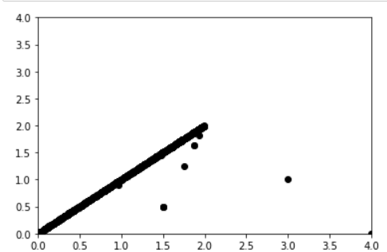

א. האוס אוברייטד
ב. לא רק שהיא לא מגיעה, היא גם לא מצליחה למפות את כל השטח. אם פתרתי נכון, משלב מסויים לא משנה כמה צעדים אני מוסיפה, שטח הכיסוי יראה זהה (ודי מגניב). אני לא מתמטיקאית, האם זה היה צפוי? או שאולי חלה טעות בחישוב שלי?
אצלי משום מה שטח וצורת הכיסוי משתנים בהתאם לגודל הנקודות , עוד לא הבנתי בדיוק למה.
אבל אם זה מגניב כנראה זה נכון …
אם זה מעניין אותך, מציע לקרוא על משהו שנקרא הילוך מקרי (random walk), זה קונספט מתמטי הסתברותי שמתייחס למה שקורה פה בשאלה ומסביר למה את חווה את התוצאות שאת חווה.
2 לייקים
תודה! ניסיתי להעביר שאלה לגוגל, אבל לא ידעתי מה לחפש 
גם נגיד 1.2345 יכול להתקבל?
כן… למה שלא יוכל?
הצורה צריכה להיות מדוייקת? או לא בהכרח?
הקוד צריך לעבוד … ה"רזולוציה" של הצורה תקבע לפי מספר ההרצות - בשביל עצמך אני מציע להריץ את הקוד עבור 10K הרצות אבל בפועל מה שאתה מגיש הוא גנרי עבור N הרצות
כאילו כל דבר יכול להתקבל אם זה בכיוון?
כי אצלי על מספר קטן של הרצות לא כל כך, אבל עבור מספר גדול יוצא משהו שמתקרב.
אתה מגניב קוד שבו מספר ההרצות הוא משתנה ולכן זה לא משנה עבור כמה הרצות.
בשביל עצמך - כדי לבדוק שהגעת לפתרון הנכון אני מציע להריץ עבור n = 10K כדי שתראה אם הצורה שלך
אכן היא המצופה - אם אתה רואה עבור זה צורה שהיא הכיוון מן הסתם הגעת לפתרון
סבבה תודה רבה. אז אין פתרון יחיד. נכון?
יש פתרון יחיד והוא נקרא N …
סבבה. הכוונה לציור. הציור לא חייב להיות זהה אצל כולם. נכון?
בהינתן שהציור תלוי בהגרלות אז לא, הוא גם לא חייב להיות זהה בין שתי הרצות שונות שלך.
לייק 1
סבבה. תודה רבה על העזרה.
היי, טוב אז בנושא השאלה הזאת,
עניתי עליה ונראה שזה עובד אבל אני מרגישה שלא מספיק טוב, אני לא בטוחה לגביי המחלקה שיצרתי, וגם לא השתמשתי בפעולות קסם… אשמח לאיזה הכוונה בנושא
לייק 1
היי גילי
את מוזמנת לשלוח לי את הקוד שלך
ואני אחווה דעתי עליו
אם את רוצה
איל

סה"כ אמור להיראות אז ככה בהינתן מספר ריצות גדול מספיק כן?
(כמובן גם יכול להיות כל צלע אחרת במשולש… יוצא גם אותם לפעמים)
תלוי איך אתה מגדיר “מס’ ריצות גדול מספיק”, תשחק עם הגודל של N עוד ועוד, ותראה איזה ציורים שונים יוצאים לך ככל שערכו גדל או קטן. אל תפחד להתנסות במספרים, הרי זו המטרה של התרגילים פה, לחקור
2 לייקים
מה שנתתי מקודם היה 5000 נראה לי
ניסיתי גם 100 אלף ויוצא אותו סגנון… כבר ב100 זה מתחיל לקבל כזאת צורה באופן יחסי עקבי